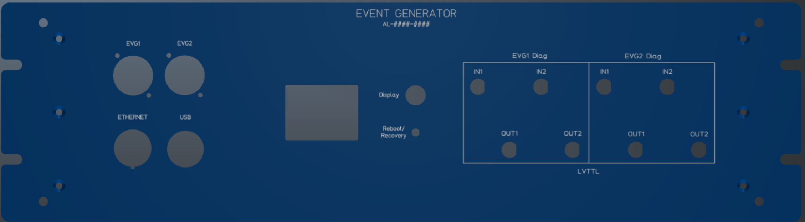
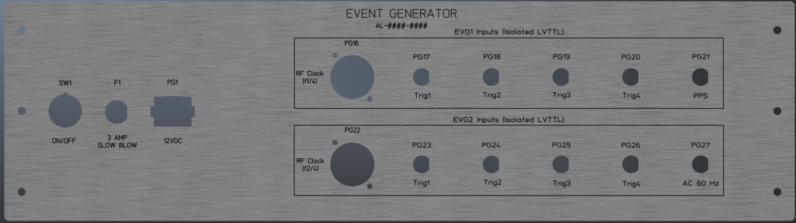
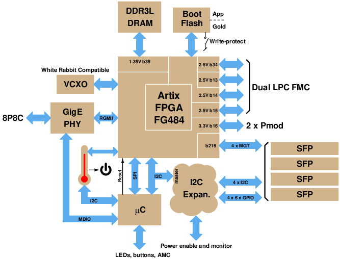
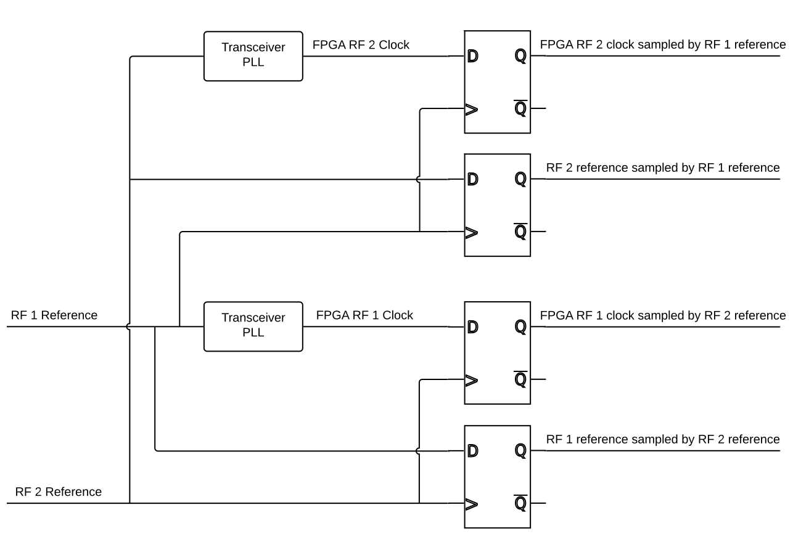
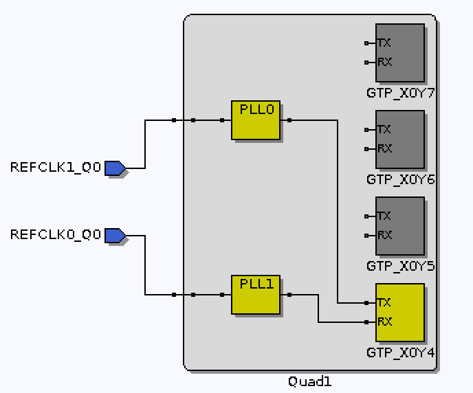
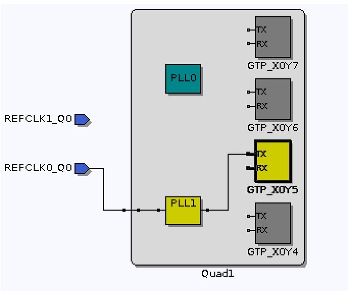

Introduction
The dual event generator consists of an FPGA platform and two FMC
cards. Each event generator distributes RF reference and
timing signals on an optical fiber using a protocol compatible with that
used by Micro-Research Finland timing equipment. The ALS-U
project requires two event generators, one for each of the RF
frequencies in use. The generators are locked to a common base and
ensure coincidence between the two frequency domains.
Hardware
Front Panel

Front Panel Connectors
There are several connectors on the event generator front panel.
- RJ-45 16000Base-T Ethernet.
- USB console serial port and JTAG interface. The serial port is run
at 115200-8N1. To view the diagnostic messages sent to the
serial port the following command can be used on Linux or OS X
machines (the name of the USB tty may differ):
cu -s 115200 -l /dev/ttyUSB2
- LC50 duplex fiber ports providing the two MRF-compatible event links.
- Diagnostic
I/O BNC connectors carrying non-isolated, LVTTL level signals.
Inputs are high impedance, outputs are capable of driving 50Ω loads.
Front Panel Controls
“Display” button
This button has multiple uses.
- To extend its lifetime the display back light is turned off
after half an hour. Pressing and releasing this button
enables the display for another half hour.
- If the display is showing a warning message pressing and holding
this button for one second will clear the warning message and restore
the display to its current page.
- If the application supports more than one page of information each momentary press cycles to the next display page.
“Reboot/Recovery” button
Pressing this button for more than one second causes the FPGA to
perform a power-on reset. If the switch is held down during a
power-up operation the FPGA will enter "recovery" mode where the
Ethernet MAC address and IPv4 address are set to default values
(AA:4C:42:4E:4C:04 and 192.168.1.129/24, respectively).
Front Panel Display
During normal operation the front panel display contains information as shown in the figure below.
- The top few lines of the display show the status of the event
sequence pattern generators. The green indicator to the right of
the 'TRG:' text blinks when an event sequence is triggered. The
value to the right of the 'SEQ:' text shows the number (0/1)
of the currently or previously active sequence.
- The 'Markers' region at the lower left side of the display shows the status of the timing marker inputs.
- The 'Temperatures' region shows a bar indicator of the
temperature of various components. SFP1 and 2 are the ones
generating the event streams, 3 and 4 are the ones receiving the
reference clocks.
- The penultimate line of the display shows the IPv4 network address of the event generator. The
network address is normally shown as white text on a black background.
A network address shown as black text on a white background indicates
the the unit is in "recovery" mode.
- The bottom line of the display shows the date and time (UTC).
Special displays
- Black text on a red background – event generator is reporting a fatal
error condition. The only exit from this state is a reset or power cycle.
- Black text on a yellow background – event generator is reporting a warning
condition. Pressing and holding the "Display" button for one second will exit this state.
Rear Panel Components
There are several components on the event generator rear panel.
- Connector for 12V power adapter.
- Holder for 3A slow-blow fuse.
- On/Off switch.
- LC50 duplex fiber ports accepting the reference clocks for each of the event generators.
- SMA connector for connecting an antenna to the optional GPS receiver.
- Isolated BNC connectors carrying LVTTL level hardware triggers and timing reference signals. Inputs
are medium impedance (475Ω plus series LED).

FPGA Card
The FPGA carrier card is a 'Marble-Mini' developed by the LBNL
Accelerator Technology Group. The following block diagram
shows the salient features of this board.

- Open Hardware (OHWR) dual-LPC-FMC carrier based on an
Artix-7 in FG484 package.
- AMC form-factor.
- Power entry through barrel-style connector (CUI
PJ-102AH), AMC backplane, or Ethernet (PoE).
- 1000BaseT Ethernet on 8P8C "RJ45" connector.
- Four FPGA GTP transceivers, up to 6 Gb/s, connected to SFP
slots.
- Two FMC connectors. LPC subset, no high speed serial
link.
- 512M×16 bit DDR3L memory.
- Two dual-row (12 pin) 3.3V PMOD connectors.
- 16 MB SPI flash memory for FPGA and application bootstrap.
FMC Cards
Each FMC card provides a reference clock to the FPGA gigabit
transceiver block and to an FPGA clock input, five optically
coupled, TTL level, hardware trigger inputs, and one optically coupled,
TTL level auxiliary input.
Each card also provides two non-isolated, TTL level, diagnostic
inputs and two non-isolated, LVTTL level, diagnostic outputs capable
of driving 50Ω loads. The reference clocks are driven by an
SFP optical receiver. The auxiliary input of the first card is
used to provide a pulse-per-second signal to the FPGA and the
auxiliary input of the second card is used to provide a power line
monitor signal to the FPGA.
Firmware
Configuration Parameters
The following table summarizes the configuration parameters
shared between the FPGA software and firmware.
Parameter
|
Value
|
Description
|
CFG_MINIMUM_INJECTION_CYCLE_MS
|
990
|
The lower limit on the time,
in milliseconds between injection cycle requests. The
injection cycle time is specified by the first line of the DefaultSequence.csv file.
|
CFG_MAXIMUM_INJECTION_CYCLE_MS
|
2010
|
The upper limit on the time,
in milliseconds between injection cycle requests. |
CFG_HARDWARE_TRIGGER_COUNT
|
5
|
The number of hardware
triggers.
|
CFG_DIAGNOSTIC_INPUT_COUNT
|
2
|
The number of diagnostic
inputs.
|
CFG_DIAGNOSTIC_OUTPUT_COUNT
|
2
|
The number of diagnostic
outputs. |
CFG_SEQUENCE_RAM_CAPACITY
|
1024
|
The size of the event
sequence RAM. Long intervals between events consume
more than one entry so the actual number of events in a
sequence may be less than this value.
|
CFG_EVG1_CLK_PER_RF_COINCIDENCE
|
608
|
The number of cycles of the
first RF reference clock to return to the same phase offset
relative to the second RF reference clock.
|
CFG_EVG2_CLK_PER_RF_COINCIDENCE
|
609
|
The number of cycles of the
second RF reference clock to return to the same phase offset
relative to the first RF reference clock. |
CFG_EVG1_CLK_PER_HEARTBEAT
|
121296000
|
The number of cycles of the
first RF reference clock between heartbeat events on the
first event generator link.
|
CFG_EVG2_CLK_PER_HEARTBEAT
|
124640000
|
The number of cycles of the
second RF reference clock between heartbeat events on the
second event generator link. |
The relationships between the per-generator parameters can be
summarized as:
where
and
are the frequencies of the reference clock inputs. The
reference clock inputs are driven at 1/4 the rate of the master
oscillators for the two frequency domains. Note that the
heartbeat intervals are are not the same.
If changes are made to any of these parameters the createVerilogIDX.sh script must be run and the firmware and software rebuilt.
Clock Synchronization
Each event generator in the FPGA is synchronized to the RF master
oscillator driving its part of the accelerator. Each master
oscillator is divided by 4 and taken to the FPGA over a fiber
link. These reference clocks drive an FPGA transceiver
reference PLL and a sampling D flip-flop as shown in the following
figure. The rising edge of the sampled signals indicates the
phase of the signal relative to the sampling clock. The
sampling of both the event generator transceiver reference and PLL
output provides an accurate measurement of the phase of the signals
relative to the sampling clock and by extension, relative to each
other. Thus the phase at which the PLL has locked its output
relative to its input can be determined.

There are two levels of event system clock alignment. The
first is the alignment of the transceiver clock output relative to
the transceiver reference. Each transceiver output clock
drives all the logic in its event generator firmware. The
transceiver output clock can be at one of twenty possible phase
offsets relative to the incoming reference. The actual offset
is randomly set when the PLL locks to its reference. This
random selection is not acceptable for this application so on
startup the transceiver is repetitively reset until it happens to
lock at the desired phase offset. The result is an event
stream correctly aligned with its the reference. There is
hardware on the FMC card to momentarily remove the transceiver
reference clock as an alternate way to force the transceiver to
resynchronize, but this capability is currently unused. It has
been empirically determined that the transceivers on the Marble Mini
board have some undocumented idiosyncrasies, namely that the second
transceiver can not be reset alone and, fortunately, that the first
transceiver always starts up at the same phase offset. The
startup code has been modified to reflect these characteristics.
The second clock alignment is the coincidence between the two RF
clock domains. The coincidence is determined by the
point at which the rising edge of the sampled clock aligns most
closely with the rising edge of the FPGA clock. The heartbeat
event in each clock domain is aligned with this coincidence.
The transceiver reference clocks are connected as follows:
- FMC1_GBTCLK0_M2C -> C293/C295 -> MGTREFCLK1 -> PLL0
-> GTP_X0Y4_TX -> SFP1
- FMC2_GBTCLK0_M2C -> C290/C291 -> MGTREFCLK0 -> PLL1
-> GTP_X0Y5_TX -> SFP2


Special Event Codes
The following event codes have special meaning.
- 0 – Idle event code. Emitted when no other event code
request is present.
- 112 (0x70) – Shift a 0 bit into event receiver 32 bit
time-of-day shift register.
- 113 (0x71) – Shift a 1 bit into event receiver 32 bit
time-of-day shift register.
- 122 (0x7A) – Heartbeat event.
- 125 (0x7D) – Pulse-per-second event. Copies time-of-day
shift register contents into event receiver time stamp 'seconds'
and clears the time stamp 'tick' counters.
Event Source Precedence
There are several sources that can request an event code be
placed in the output stream.
An event code slot can be occupied by at most a
single event code so the sources are assigned a priority with
the event corresponding to the highest priority request being
emitted when two or more requests are present simultaneously.
The sources and their priorities are as follows.
- Sequence pattern event requests have the highest priority and
are never omitted or shifted to a later event code slot.
It is good practice to minimize the
shifting of lower priority events by providing at least one empty slot between sequence pattern events.
- Heartbeat events are never shifted to a later event code
slot. If a heartbeat event request and a sequence pattern
event request occur simultaneously the heartbeat event request
is ignored.
- Pulse-per-second event requests are delayed to the first
available event code slot following sequence pattern or
heartbeat events.
- Hardware triggered event requests are delayed to the first
available event code slot following sequence pattern,
heartbeat, or pulse-per-second events. If multiple hardware triggers are present the lowest numbered input takes
precedence.
- Software triggered event requests are delayed to the first
available event code slot following sequence pattern,
heartbeat, pulse-per-second, or hardware triggered events.
- Time-of-day (POSIX seconds) events are delayed to the first
available event code slot following all other event
requests. This has no effect on the operation of the
timing system as long as all 32 time-of-day events arrive by the
time of the next pulse-per-second event.
Distributed Data Bus
A 50% (approximately) duty cycle waveform is place on the least
significant bit of the distributed data bus. The rising edge
of this signal is coincident with the heartbeat event, or where
the heartbeat event would have occurred if the heartbeat event is
preempted by a sequence pattern event.
TFTP Server
FPGA
firmware, system parameters, and the default event sequence are
stored in flash memory in a psuedo-filesystem. A TFTP server
provides access to the following 'files':
Name
|
Description
|
ImageA.bin
|
Primary FPGA bootstrap.
|
ImageB.bin
|
Secondary FPGA bootstrap. Used
if the primary bootstrap file is missing or damaged.
|
SystemParameters.bin
|
The internal representation of
the network configuration system parameters. |
DefaultSequence.csv
|
A
'Comma Separated Values' file specifying the default
injection sequence. The first line is the time, in
milliseconds, between injection cycle requests. The
following lines contain delay,event pairs. Delay
values are in units of event generator ticks, about 8 ns
each. This is the sequence that will be generated when
no other injection sequence has been requested by the
IOC. This ensures that a valid injection sequence is
generated even if network or IOC issues prevent requests
from reaching the FPGA. A line with a third column
containing an asterisk (*) marks this event as the one that
will clear bit 4 of the sequencer status.
|
FullFlash.bin
|
The entire 16 MB flash memory.
|
FMC1_EEPROM.bin
|
The
IPMI EEPROM of the card installed in the first FMC slot.
|
| FMC2_EEPROM.bin |
The
IPMI EEPROM of the card installed in the second FMC slot. |
Note:
- The files must be transferred in 'binary' mode.
- Don't attempt simultaneous transfers from multiple clients.
- The very basic filesystem emulation does not record the sizes
of the '.bin' files. Downloading these from the FPGA will transfer the
full area available so the resulting downloaded file will
contain the uploaded file followed by some number of extra
values.
- The IPMI EEPROMs can be written only when the 'Write Enable'
jumper is in place on the FMC cards.
GPS Time Provider
A Digilent GPS PMOD card can be
used to supply the time of day and pulse per second references required
by the dual event generator. Connect the PMOD card to the ‘odd’
side of the Marble Mini PMOD2 connector (pins 1, 3, 5, 7, 9, 11) and set
the NTP server address to 0.0.0.0. The FMC pulse-per-second input
is ignored in this mode of operation.
Setting Network Parameters
- Depress the "Reset/Recovery" push button on the front panel while
the system is powering up or rebooting. This sets the IPv4
network address to 192.168.1.129, the Ethernet MAC address to
AA:4C:42:4E:4C:04, and the NTP server address to 0.0.0.0.
- Connect the chassis to a 192.168.1.0/24 network and run the console.py script from a host
on that same network.
- Use the mac, net, and tod commands to set the
Ethernet, IPv4 addresses, and NTP server address, respectively.
- Reboot or power cycle the system.
Alternatively, a terminal
emulator program and USB cable can be used to communicate with
the system through its USB console serial port (115200-8N1) to
issue the desired commands.
Console Commands
The FPGA sends
startup and diagnostic messages to its USB console serial port and
to a UDP port accessible through the console.py script. The
serial port is run at 115200-8N1. Commands are entered
using a simple command line interpreter. There is no command
history and the only editing available is the backspace or delete
key which erases the character currently at the end of the
line. A carriage-return or line-feed character marks the end
of a line. Only enough of a command to make it unique is
required. Since no existing commands share a common leading
letter this means that only the first character of a command is
needed. The commands are:
- boot
- The FPGA prompts for confirmation and then restarts as if
powered up.
debug [-s] [n]- The debugging flags are set to the specified value, if one is
given. The bits are
- Bit 0 — Enable messages related to the EPICS UDP port.
- Bit 1 — Enable messages related to the TFTP UDP port.
- Bit 2 — Enable messages related to flash memory I/O
transactions.
- Bit 4 — Enable messages related to the time of day
(NTP or GPS) state machine.
- Bit 6 — Enable messages showing sequence memory
updates.
- Bit 8 — Enable messages showing operation of the PLL
synchronization state machine.
- Bit 16 — Force the LCD display out of warning mode (like
pressing and holding Display button).
- Bit 24 — Dump the LCD screen contents to the console serial
line as an ASCII portable bitmap. Takes over a minute to
complete during which time no other operations take place.
- If the optional -s
argument is present the value of the debugging flags will be
written to flash memory and the flags will be set to that value
on startup.
- fmon
- Show the frequencies of the various FPGA clocks.
- log
- Replay console startup messages.
mac
[aa:bb:cc:dd:ee:ff]- Show the Ethernet MAC address if no argument is present
otherwise set the MAC address in flash memory. The FGPA
prompts for confirmation before writing to the flash memory.
- net [www.xxx.yyy.zzz[/n]]
- Show the network settings if no argument is present otherwise
set network parameters in flash memory based on the
argument. The network address is set to the specified
value. The netmask is set based on the optional network
address length (/n). If the network address length is
omitted a value of 24 (Class C network) is used. The FPGA
prompts for confirmation before writing to the flash memory.
- pll [evg1_target evg2_target]
- Show the target
offsets between the transceiver PLL reference and output for
each of the event generators if no argument is present otherwise
write the specified values to flash memory.
- reg r [n]
- Show the contents of n (default 1)
general-purpose I/O registers starting at register r.
seq [evg [seq]]- Show the contents of
the specified event receiver sequence memory. A missing or
out of range argument will show values for both event generators
and/or sequences.
- tod [www.xxx.yyy.zzz]
- Show the IPv4 address of the NTP server if no argument is
present otherwise set the address of the NTP server in flash
memory based on the argument. The FPGA prompts for
confirmation before writing to the flash memory.
Support Scripts
- console.py
[-a IP_name_or_address]
- Connect to the console port of the FPGA.